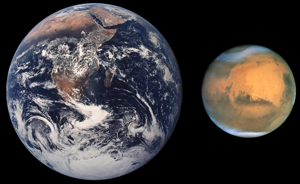

Марс — четвёртая по удалённости от Солнца и седьмая по размерам планета Солнечной системы; масса планеты составляет 10,7 % массы Земли. Названа в честь Марса — древнеримского бога войны, соответствующего древнегреческому Аресу. Иногда Марс называют «красной планетой» из-за красноватого оттенка поверхности, придаваемого ей минералом маггемитом — γ-оксидом железа(III)
У Марса есть два естественных спутника — Фобос и Деймос (в переводе с древнегреческого — «страх» и «ужас», имена двух сыновей Ареса, сопровождавших его в бою), которые относительно малы (Фобос — 26,8×22,4×18,4 км, Деймос — 15×12,2×10,4 км)[8][9] и имеют неправильную форму.
По линейному размеру Марс почти вдвое меньше Земли. Его средний экваториальный радиус оценивается как 3396,9 ± 0,4 км[26] или 3396,2 ± 0,1 км[3][27][2] (53,2 % земного). Средний полярный радиус Марса оценивается в 3374,9 км[26] или 3376,2 ± 0,1 км[3][2]; полярный радиус у северного полюса — 3376,2 км, у южного — 3382,6 км[28]. Таким образом, полярный радиус примерно на 20—21 км[29] меньше экваториального радиуса, а относительное полярное сжатие Марса f = (1 − Rп/Rэ) больше земного (соответственно 1/170 и 1/298), хотя период вращения у Земли несколько меньший, чем у Марса; это позволило в прошлом выдвинуть предположение об изменении скорости вращения Марса со временем[30]. Сравнение размеров Земли (средний радиус 6371,11 км) и Марса (средний радиус 3389,5 км[3]) Площадь поверхности Марса равна 144 млн км2[26][28] (28,3 % площади поверхности Земли) и приблизительно равна площади суши на Земле[31]. Масса планеты — 6,417⋅1023[28]—6,418⋅1023[29] кг, более точные значения: 6,4171⋅1023 кг[2][5] или 6,4169 ± 0,0006 ⋅1023 кг[27]. Масса Марса составляет около 10,7 % массы Земли[2]. Средняя плотность Марса — 3930[29][28]—3933[2] кг/м3, более точное значение: 3933,5 ± 0,4 кг/м3[26] или 3934,0 ± 0,8 кг/м3[27] (0,713 земной плотности[2]). Ускорение свободного падения на экваторе равно 3,711 м/с²[26] (0,378 земного); первая космическая скорость составляет 3,6 км/с[29], вторая — 5,027 км/с[26].
Период вращения планеты — 24 часа 37 минут 22,7 секунды (относительно звёзд), длина средних марсианских солнечных суток составляет 24 часа 39 минут 35,24409 секунды, всего на 2,7 % длиннее земных суток. Для удобства марсианские сутки именуют «солами». Марсианский год равен 668,59 сола, что составляет 686,98 земных суток[32][33][34].
Марс вращается вокруг своей оси, наклонённой относительно перпендикуляра к плоскости орбиты под углом 25,19°[2]. Наклон оси вращения Марса обеспечивает смену времён года. При этом эксцентриситет орбиты приводит к большим различиям в их продолжительности — так, северная весна и лето, вместе взятые, длятся 371 местные сутки, то есть заметно больше половины марсианского года. В то же время они приходятся на участок орбиты Марса, удалённый от Солнца. Поэтому на Марсе северное лето долгое и прохладное, а южное — короткое и относительно тёплое.